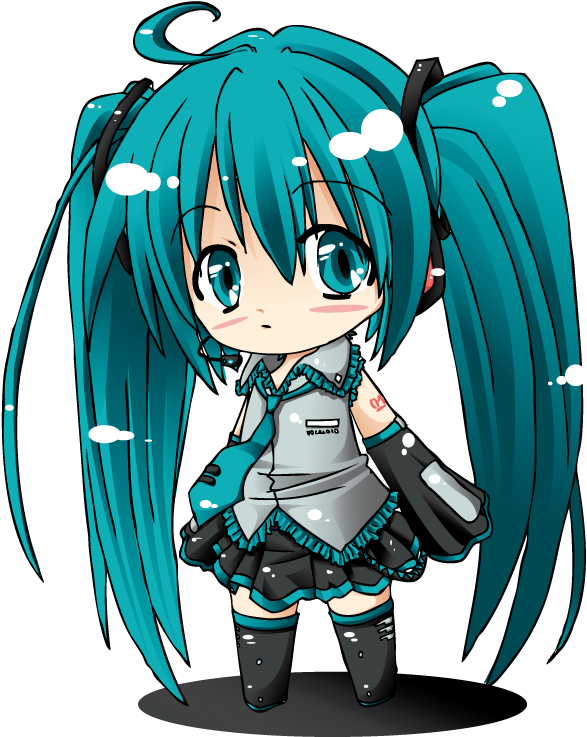

This is a fan website for the musical group "Nightcord at 25:00" of the game Project SEKAI/HATSUNE MIKU: COLORFUL STAGE!.
© Davide Sollo, 2025. All Rights Reserved.
Unauthorized copying or plagiarism of this website's content is not allowed.
Project SEKAI: Colorful Stage! © SEGA / Colorful Palette / Crypton Future Media.
All game-related images, characters, names, and assets are the property of their respective owners and are used under fan-content guidelines. No affiliation or endorsement is claimed.
Contact:
Instagram